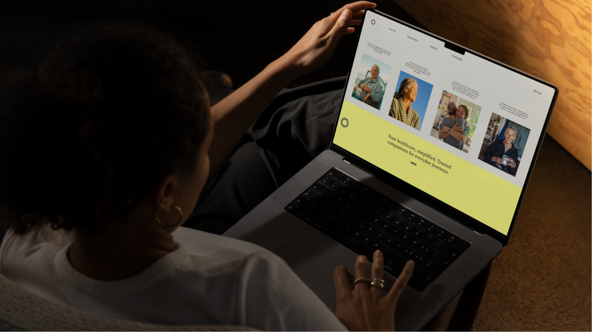
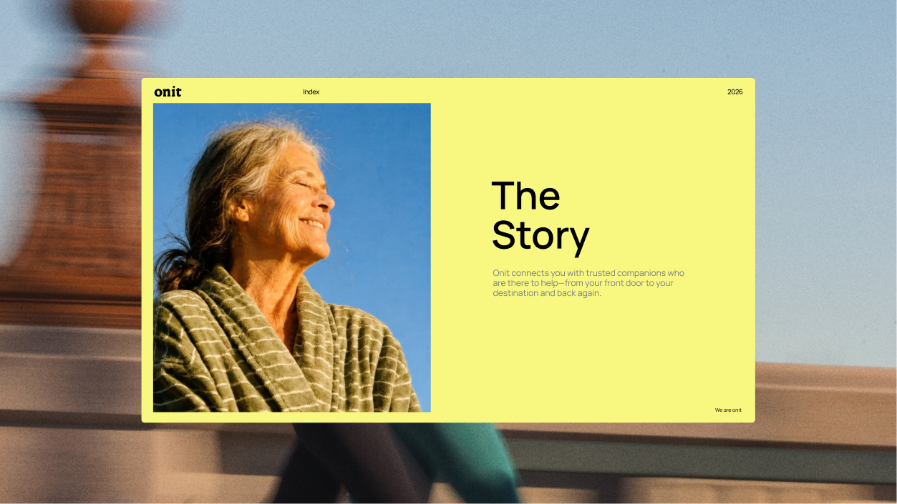
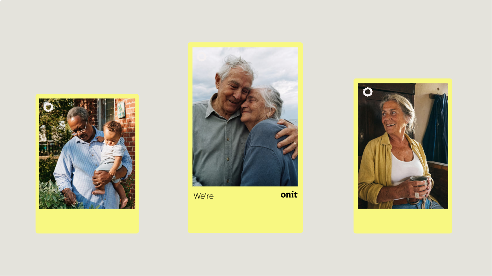
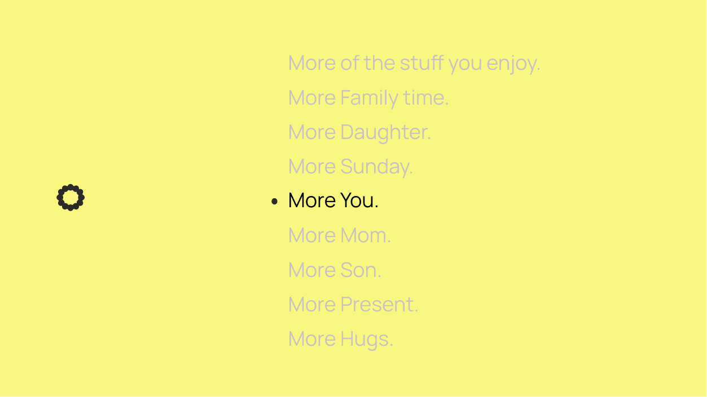

Everything we've built into the Onit Brand Agent.
A full naming process, landing on a name that carries the promise inside it. We're on it.
Owning proactive, pre-crisis, plain-language help, the thing people are actually looking for.
The narrative that frames the brand: proactive care between appointments, told so it lands the first time.
Lines that name the real thing: calls, bills, transport, referrals. Each one closes on we're onit.
Wordmark, Manrope, a warm palette and real photography. It looks like care, not billing.
A marketing site that reads the way the service works, plainly, from the first screen.
All of it handed into an agent, so Onit keeps running on the brand without us in the room.
Care navigation is a new US category with real competitors already circling. All reactive, all insurance-billing focused, speaking category language to people already overwhelmed inside the system. Meanwhile the family is the one on hold, losing hours it never gets back.
Every one of them sounds the same and looks the same. Language stuck inside out, "administrative burden" standing in for what the service actually is. Nobody owns the proactive, plain help people are looking for.
One brand that behaves the way the service does. The name, the promise, the voice, the visual identity and the experience are all built to take the workload off the family. Proactive and in plain language.
The name carries the promise inside it. We're on it. Not a metaphor bolted on afterward, the name is the positioning.
We make the calls.
We decode the paperwork.
We line up the details.
The system around your health shouldn't steal your time. This insight became the foundation for our brand promise "We've Got You". We turned the logic around, so "We make the calls." "We decode the paperwork." "We line up the details." Letting you know you have a person to handle your healthcare. We do it in plain language, naming the actual things we help navigate, calls, bills, transportation, referrals, never hiding behind category language. And each one closes with we're onit, the wordmark doing double duty as sentence and signature.
Logo, typography, color scheme, layout principles, and the whole design system.




"You're so dreamy, thanks Norma."
Carly
"Enjoying using norma, would it be possible to remove you? It would allow us to move much more quickly."
Josh